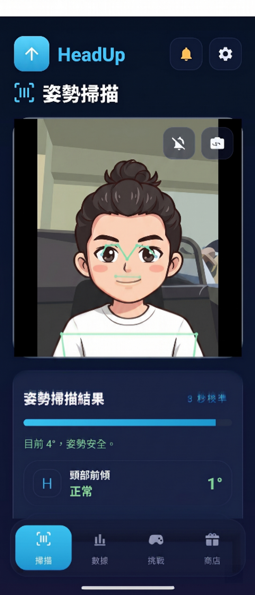
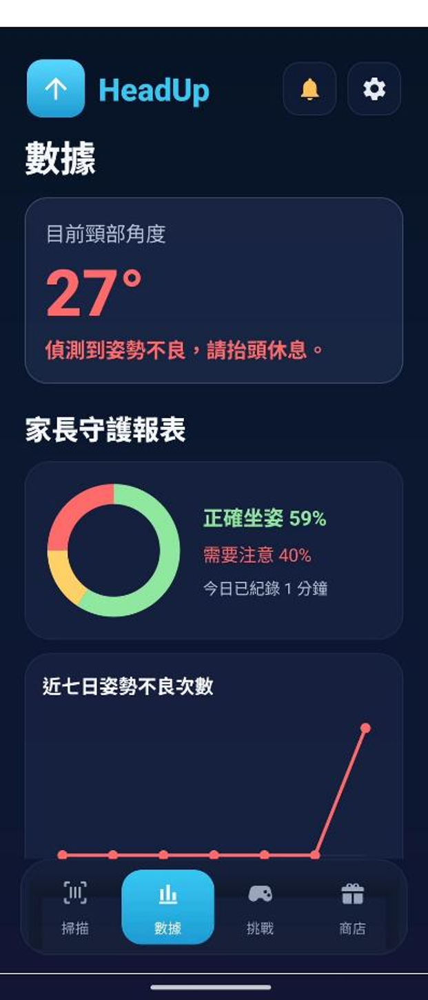
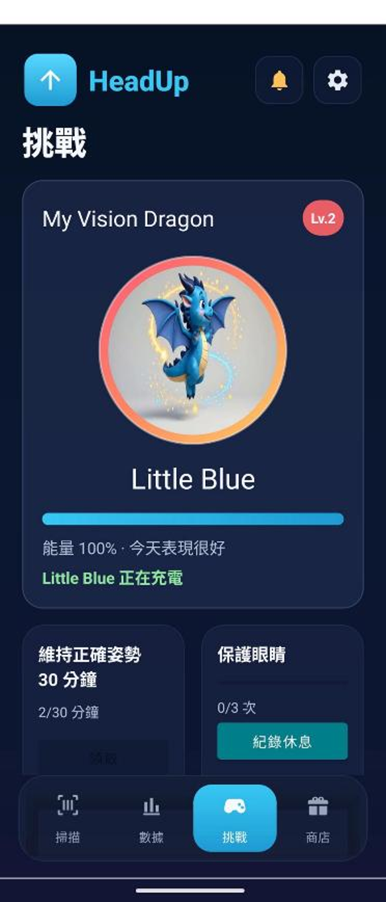
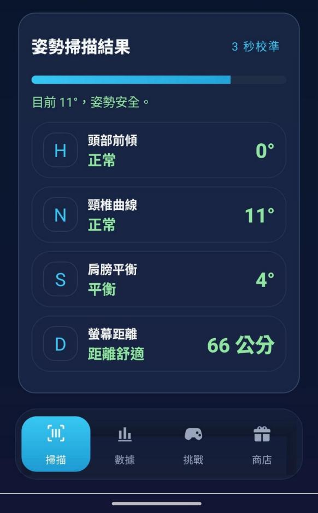
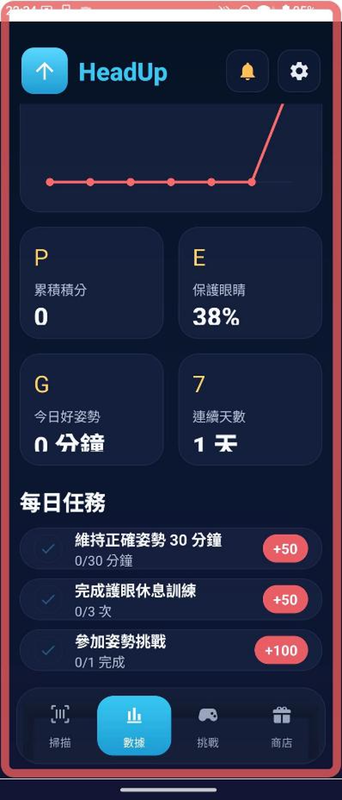
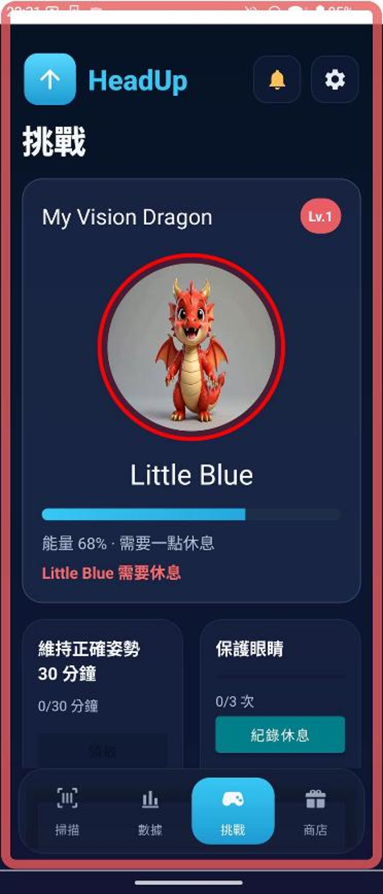
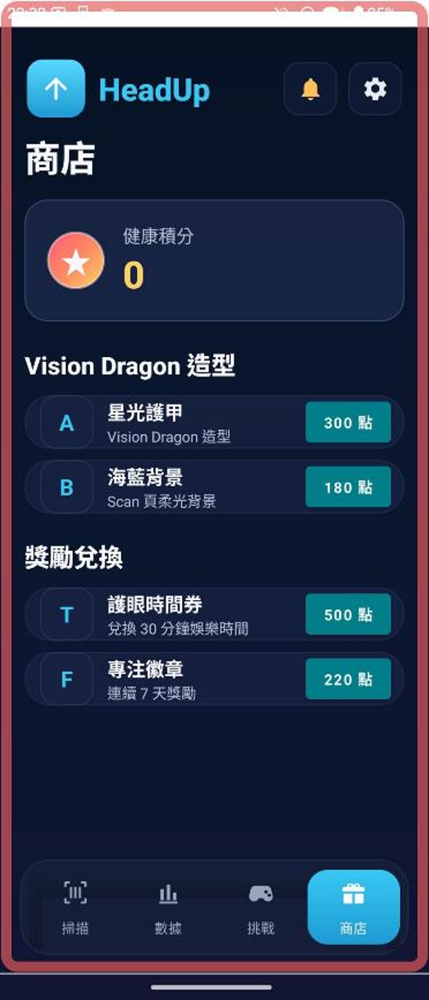
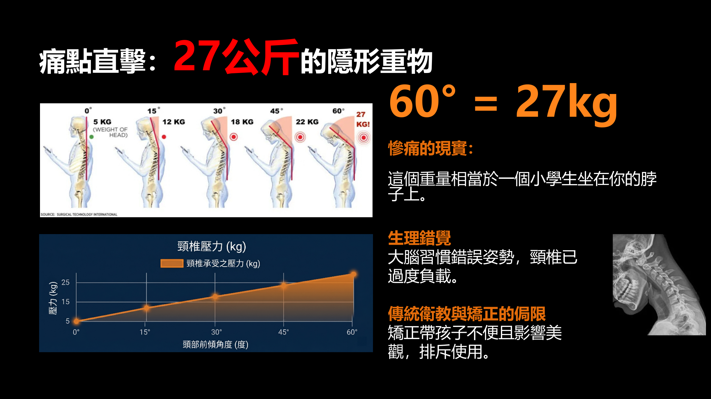
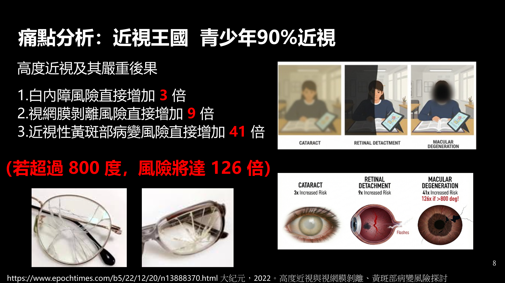

即時姿勢掃描
前鏡頭偵測眼睛、鼻子、嘴巴、肩膀等關鍵點，顯示頭部前傾、頸椎曲線、肩膀平衡與螢幕距離。
Head Up 使用 MediaPipe Edge AI 與 CameraX，即時偵測頭部前傾、肩膀平衡與螢幕距離。當姿勢不良持續發生時，App 會以紅框、震動與 Vision Dragon 提醒，並把資料記錄成可理解的守護報表。



從即時姿勢掃描、背景守護、資料統計到 Vision Dragon 挑戰，Demo 已把核心產品體驗串成完整流程。
前鏡頭偵測眼睛、鼻子、嘴巴、肩膀等關鍵點，顯示頭部前傾、頸椎曲線、肩膀平衡與螢幕距離。
EMA 降噪與 3 秒防抖降低誤報；當快速低頭時，角速度追蹤會先以短震動提醒。
本機記錄真實姿勢資料，呈現今日好姿勢比例、近七日不良次數與每日任務進度。
用可愛角色把護眼與坐姿養成變成任務，讓提醒更像陪伴，而不是單純警告。




長時間低頭、近距離看螢幕與缺乏休息，容易讓孩子把錯誤姿勢變成習慣。Head Up 的目標是把風險提醒變得即時、溫和、可追蹤。

孩子常在不知不覺中低頭讀書或滑平板。Head Up 透過角度與肩膀關鍵點追蹤，協助在姿勢惡化前提醒抬頭。

螢幕距離過近時，App 會以顏色狀態提示；每日護眼休息也會被記錄，讓家長看見孩子實際使用狀況。
本 Demo 以教育宣導與姿勢輔助提醒為目的，不取代專業醫療診斷；若有眼睛或頸椎不適，請諮詢專業醫師。
下載連結會取得 GitHub Releases 中最新的 Android Demo APK，可用於實機體驗 Scan、Stats、Challenge 與 Shop 頁面。
Demo APK 尚未上架 Play Store，首次安裝時 Android 可能會要求允許從瀏覽器或檔案管理器安裝。
在 Android 手機上開啟此網站，點擊下載 Demo。
依照系統提示允許瀏覽器安裝此 APK。
開啟 Head Up，使用訪客、快速使用或帳號登入開始姿勢守護。